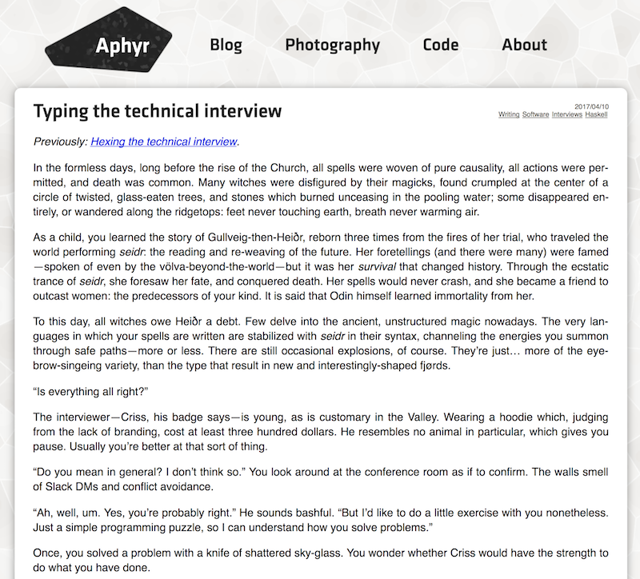
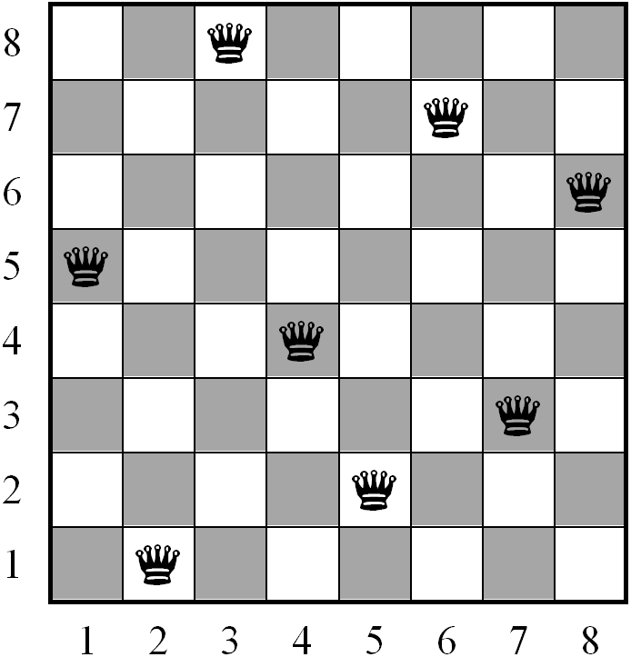

class: middle, center # Typelevel computations with Scala ### Ilya Murzinov [https://twitter.com/ilyamurzinov](https://twitter.com/ilyamurzinov) [https://github.com/ilya-murzinov](https://github.com/ilya-murzinov) .bottom[[https://ilya-murzinov.github.io/slides/scalaspb2017](https://ilya-murzinov.github.io/slides/scalaspb2017.pdf)] --- class: middle, center --- class: middle, center # Why? ??? We love types for being able to catch errors in compile time Maybe you have heard that Scala typesystem is Turing complete, therefore, we can run arbitrary computations in compile-time It's interesting how exactly meaningful computations can be implemented and how far we go with it --- # We can do amazing things in Haskell  ??? Staring with Haskell is never good, but I'll try to keep it simple There will be no mentions of Monad except this one, honestly Kyle Kingsbury Distributed system correctness --- # N queens problem  ??? Problem is to find ALL solutions for given N --- # Algorithm ??? Algorithm - recursively for every queen in row check if it's safe, then add it and move to the next row --- # What we need for solution - Natural numbers -- - Lists -- - Booleans -- - Functions -- - **The way to operate with all above** --- # Natural numbers ```scala trait Nat trait Z extends Nat trait Succ[N <: Nat] extends Nat ``` -- ```scala type _0 = Z type _1 = Succ[_0] type _2 = Succ[_1] type _3 = Succ[_2] type _4 = Succ[_3] type _5 = Succ[_4] // and so on ``` --- # Typelevel functions ```scala trait Nat { type Add[A <: Nat] } ``` -- ```scala trait Z extends Nat { type Add[A <: Nat] = A } ``` -- ```scala trait Succ[N <: Nat] extends Nat { type Add[A <: Nat] = `Succ[Z#Add[A]]` } ``` --- # Typeclasses -- ```scala def print[A](a: A)(implicit e: Encoder[A]): String = e.print(a) ``` -- ```scala scala> print(42) 42 ``` -- Deep down in some imported library: ```scala trait Encoder { // <-- typeclass def print[A](a: A) } implicit val encoder = new Encoder[Int] { def print(i: Int) = i.toString } ``` ??? This is a trivial case Scala compiler can resolve complex implicits by dividing them into simple ones Out typeclasses will not have value-level methods --- # The Add typeclass ```scala class Add[A, B] { type Out } ``` ??? Type bounds are left hereinafter Type member is like type parameter Think of it as a result and type parameters as arguments -- ```scala implicit def a0[A]: Add[`_0`, A] { type Out = A } = `???` ``` -- ```scala implicit def a1[A]: Add[A, `_0`] { type Out = A } = ??? ``` -- ```scala implicit def a2[A, B, C](implicit a: `Add[A, B] { type Out = C }` ): `Add[Succ[A], B] { type Out = Succ[C] }` = ??? ``` --- # How to use it -- ```scala def implicitly[A](implicit a: A) = a ``` -- ```scala scala> implicitly[Add[_1, _2]] scala.NotImplementedError: an implementation is missing at scala.Predef